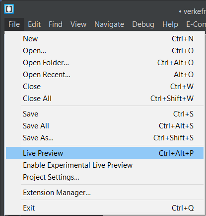
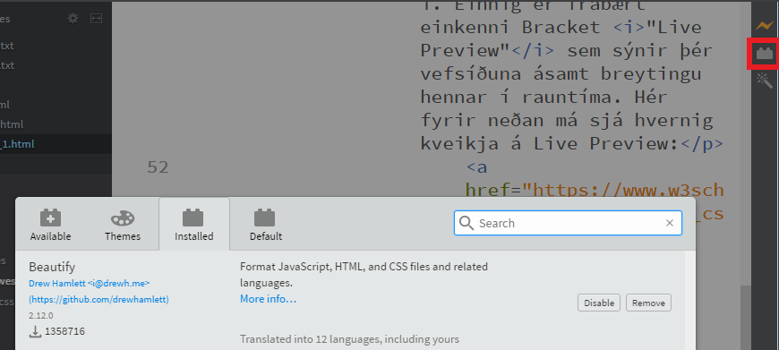
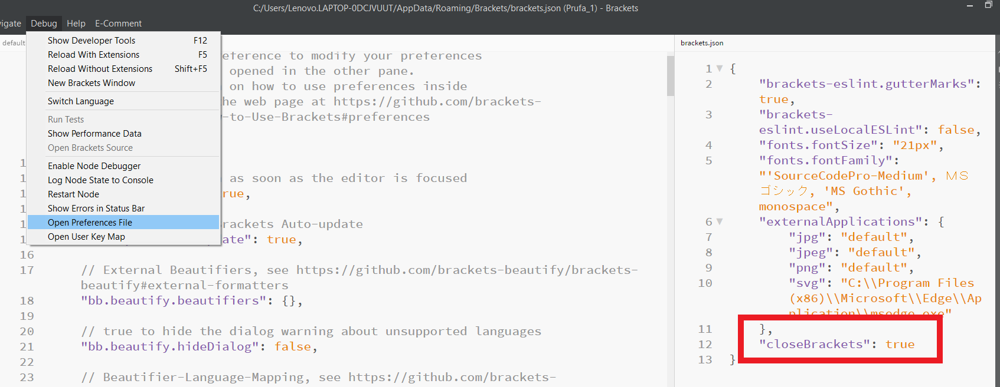
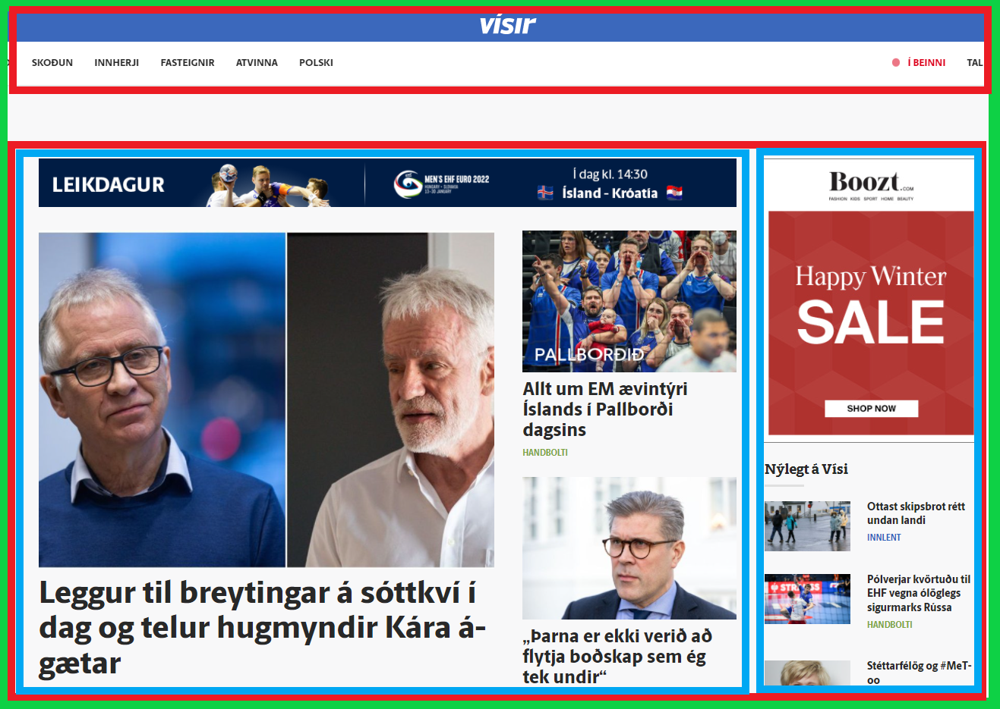
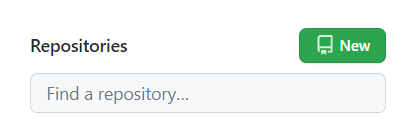

Verkefni 1 - Að búa til vefsíðu með HTML
Fyrsta verkefni áfangans fólst í því að búa til og hanna heimasíðu sem á að hýsa öll verkefni, ásamt verkferlum þeirra. Ferlið byrjaði með því að leita af sniðmáti fyrir vefsíðunni minni á html5up.net, síða sem Hafliði benti okkur á. Ég endaði á að velja sniðmátið Dopetrope. Upp að þessari önnu var ég aldrei búinn að koma nálægt tungumálinu HTML sem útskýrir tilvistarkreppuna sem ég upplifði við að skoða grunnkóða sniðmátsins.
Hugbúnaður
Því næst náði ég í hugbúnaðinn Brackets frá Adobe sem gerir mér kleift að breyta sniðmátinu eins og mér henntar. Brackets er einfalt, þæginlegt í notkun og henntar vel í vefforritun að mínu mati. Það er einfalt að ná í viðbætur (e. extensions), þæginlegt að fara á milli mappa/skjala sem unnið er í. Einnig er frábært einkenni Bracket "Live Preview" sem sýnir þér vefsíðuna ásamt breytingu hennar í rauntíma. Hér fyrir neðan má sjá hvernig kveikja á Live Preview:
Einnig má sjá hvernig hægt er að setja mynd í miðja blokk, með því að smella á myndina.
Hér má finna nokkrar góðar viðbætur fyrir Brackets, en ég náði einungis í Beutify (Ctrl+Alt+B) sem gerir kóðann þinn örlítið auðlesanlegri
Eina sem fór úrskeiðis í uppsetningu Brackets var að sjálfvirka lokun mekjanna (e. tag) t.d. <p> virkaði ekki. Hægt er að laga þetta með því að fylgja leiðbeiningunum hér fyrir neðan, eða horfa á þetta myndband og sjá hvar má finna "close_brackets".
HTML, CSS og fyrsta vefsíðan
Eftir að hugbúnaðurinn var tilbúinn ákvað ég að kynna mér forritunar tungumálin sjálf. HTML (HyperText Markup Language) er kóði/textaskrá sem lýsir því hvernig vefsíða er byggð upp. Með tungumálinu er hægt að skipta innihaldi vefsíðunar í hluta. Hér fyrir neðan má tildæmis sjá hvernig forsíðu Vísis er skipt up.

Græni kassinn er grunnurinn á vefsíðunni, rauðu kassaarnir eru skilgreind svæði til að skipta upp grunninum og bláu kassarnir eru einingar sem hægt er að raða í skilgreindu svæðin. En þessi mynd sýnir hvernig vefsíðan lítur út með CSS, án CSS væru t.d. nánast engir litir og myndirnar væru ekki skalaðar niður til þess að passa inn í einingarnar.
CSS Cascading Style Sheets er kóði/skjal sem að lýsir útliti eininganna sem eru innan í HTML skjalinu. Sem dæmi notaði ég CSS kóðabúta sem bjó til til þess að breyta einingunni hér fyrir neðan, þar sem má finna fín kynningarmyndbönd fyrir HTML og CSS. (t.d. bakgrunnur grár, liti á texta hvítur).
HTML
CSS
Með þessum myndböndum fékk ég ágætan grunn í þessum tungumálum og eiginleikum þeirra. Það hjálpaði gríðarlega mikið að vinna í prufu síðu á sama tíma og ég horfði á myndböndin, þrátt fyrir að það tók mun lengri tíma. Hér má fá að sjá fyrstu prufu vefsíðuna mína. Ég gluggaði einnig af og til í ýmsar leiðbeiningar á w3schools.com, mjög byrjandavæn vefsíða!
Hönnun vefsíðunnar
Með aukinni þekkingu á HTML/CSS var aftur farið í grunnkóða sniðmátsins. Í þetta skipti var mun minna mál að rýna í kóðann. Ég hafði virkilega gaman að því að sjá hvernig höfundur kóðanns byggði gunninn upp, þá sérstaklega hvað CSS hlutinn var rökréttur, amk. miðað við upprunalegu síðuna mína. Allar undirsíður vefsíðunnar voru hannaðar út frá no-sidebar sniðmátinu sem fylgdi Dopetrope, hún var einföldust og því minnst sem þurfti að breyta og passa upp á m.t.t. CSS.
Þekkingin mín á HTML/CSS er búin að gjör breytast á síðustu dögum, þrátt fyrir að ég sé ekki alveg með nokkra hluti á hreinu. Fatta t.d. ekki hvenær á að nota <div>/<body> og á stundum erfitt með að staðsetja element á réttum stað.
Git
Ég byrjaði á því að búa til aðgang á GitHub og búa til nýtt repository, eins og sést hér fyrir neðan. Respitory þarf að heita "notendanafn".gihub.io.
Því næst náði ég í GitHub Desktop til þess að setja inn skrárnar mínar inn á GitHub. Þegar uppsetingu var lokið, skráði ég mig inn á GitHub í forritinu. Eftir það fylgi ég leiðbeiningum í myndbandinu hér fyrir neðan. Hér má einnig finna repository-ið mitt.
Þekkingin mín á HTML/CSS er búin að gjör breytast á síðustu dögum, þrátt fyrir að ég sé ekki alveg með nokkra hluti á hreinu. Fatta t.d. ekki hvenær á að nota <div>/<body> og á stundum erfitt með að staðsetja element á réttum stað.